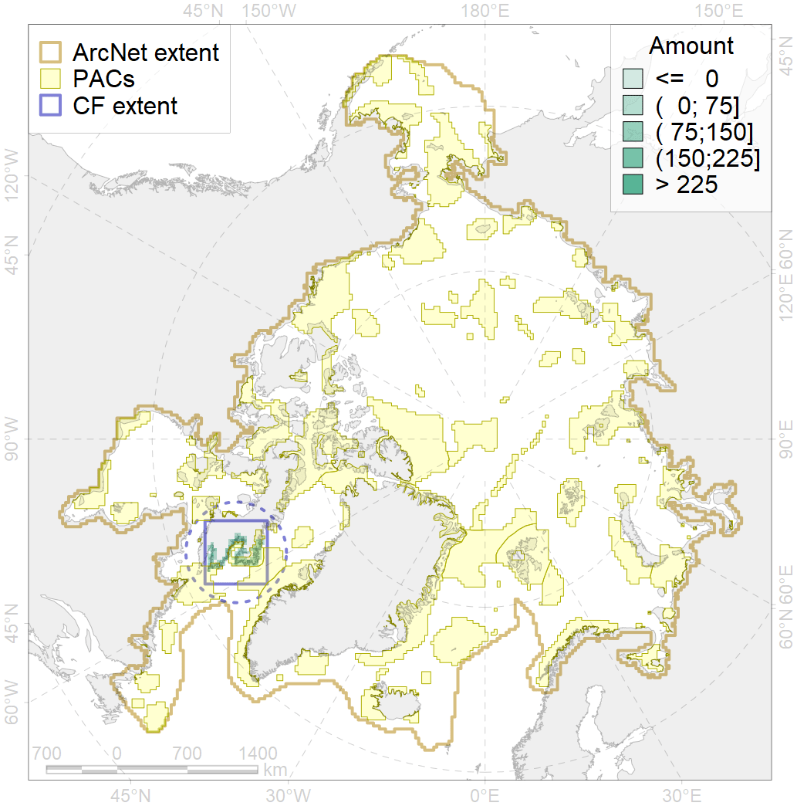
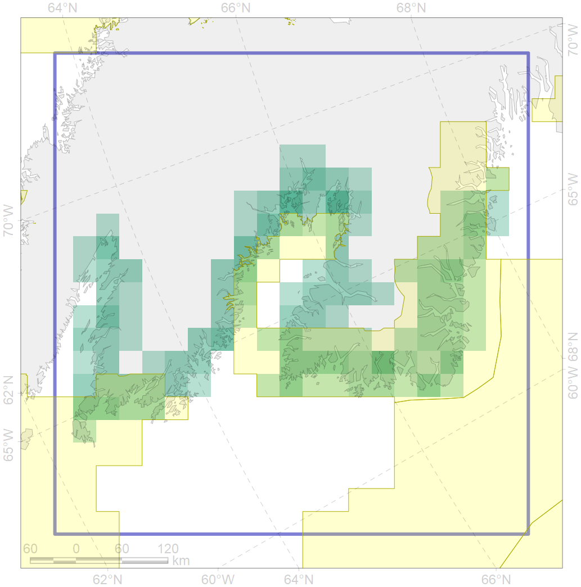

7239

| CF code | 7239 |
| CF name | Kelp forests of south-east Baffin I. coast |
| Time Period | 1970-2015 |
| Source(s) | Feelby-Dexter et al., 2019 |
| Seasonality | 1-12 |
| Depth Horizon | 1-30 m |
| Methodology | Extent of kelp forest along the shore is derived acoording to frequent point observations reported in the literature and inferring quasi-continuous extent of kelp communities between points |
| Use Restrictions | Open access |
| Author Name | V. Spiridonov |
| Notes | |
| Scenario’s Target | 0.3 |
| Target Achievement | 0.551 (Scenario: 183.7%) |
| PAC | Share of the Total Amount within the PAC | Share of the Target Achievement for the ArcNet | PAC’s Contribution to the Target Achievement |
|---|---|---|---|
| 46 | 43.5%48.0% | 140.0%144.9% | 76.2%78.9% |
| 76 | 9.8%9.9% | 31.3%31.4% | 17.0%17.1% |
| inner | 53.3%57.9% | 171.2%176.3% | 93.2%96.0% |
| outer | 46.7%54.5% | 12.5%35.5% | 6.8%19.3% |
| † supplement values are for area consistence whereas principal values are for Accenter compatible gridded stats |